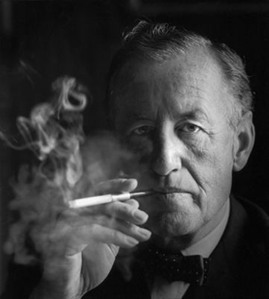

The Creating
The James Bond series focuses on a fictional character created in 1953 by writer Ian Fleming, who featured him in twelve novels and two short-story collections. As the central figure for his works, Ian Fleming created the fictional character of James Bond, an intelligence officer in the Secret Intelligence Service, commonly known as MI6. Bond was also known by his code number, 007, and was a Royal Naval Reserve Commander. Fleming based his fictional creation on a number of individuals he came across during his time in the Naval Intelligence Division during World War II, admitting that Bond was a compound of all the secret agents and commando types I met during the war.
When I wrote the first one in 1953, I wanted Bond to be an extremely dull, uninteresting man to whom things happened; I wanted him to be a blunt instrument ... when I was casting around for a name for my protagonist I thought by God, (James Bond) is the dullest name I ever heard.–Ian Fleming
Ian's Novels
On 17 February 1952, he began writing his first James Bond novel, Casino Royale at his Goldeneye estate in Jamaica, where he wrote all his Bond novels during the months of January and February each year.After completing the manuscript for Casino Royale, Fleming showed the manuscript to his friend (and later editor) William Plomer to read. Plomer liked it and submitted it to the publishers, Jonathan Cape, who did not like it as much. Cape finally published it in 1953 on the recommendation of Fleming's older brother Peter, an established travel writer. Between 1953 and 1966, two years after his death, twelve novels and two short-story collections were published. Since Fleming's death in 1964 seven other authors have written authorised Bond novels or novelizations.
Published novels
- 1953 Casino Royale
- 1954 Live and Let Die
- 1955 Moonraker
- 1956 Diamonds Are Forever
- 1957 From Russia, with Love
- 1958 Dr. No
- 1959 Goldfinger
- 1960 For Your Eyes Only
- 1961 Thunderball
- 1962 The Spy Who Loved Me
- 1963 On Her Majesty's Secret Service
- 1964 You Only Live Twice
- 1965 The Man with the Golden Gun
- 1966 Octopussy and The Living Daylights
Films
In 1962 Eon Productions, the company of Canadian Harry Saltzman and American Albert R. "Cubby" Broccoli, released the first cinema adaptation of an Ian Fleming novel.
Sean Connery
- 1962 Dr. No
- 1963 From Russia, with Love
- 1964 Goldfinger
- 1965 Thunderball
- 1967 You Only Live Twice
- 1971 Diamonds Are Forever
George Lazenby
- 1969 On Her Majesty's Secret Service
Roger Moore
- 1973 Live and Let Die
- 1974 The Man with the Golden Gun
- 1977 The Spy Who Loved Me
- 1979 Moonraker
- 1981 For Your Eyes Only
- 1983 Octopussy
- 1985 A View to a Kill
Timothy Dalton
- 1987 The Living Daylights
- 1989 Licence to Kill
Pierce Brosnan
- 1995 GoldenEye
- 1997 Tomorrow Never Dies
- 1999 The World is Not Enough
- 2002 Die Another Day
Daniel Craig
- 2006 Casino Royale
- 2008 Quantum of Solace
- 2012 Skyfall